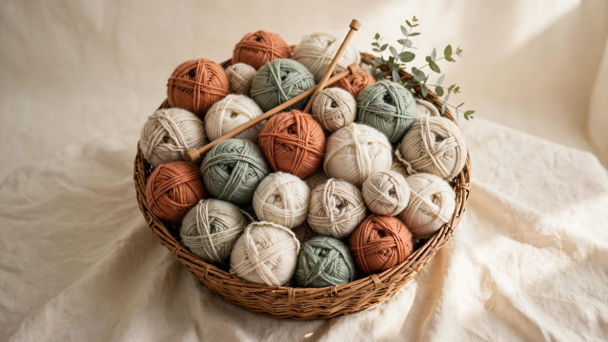

Free yarn calculator
How Much Yarn Do You Need?
Get accurate yarn estimates for knitting and crochet projects. Find yardage and skein counts in seconds.

Calculate Your Yarn Needs
Select your project, yarn weight, and enter your yarn details to get an instant estimate.
Auto-filled for the chosen weight — change it to match your yarn.
10–15% covers gauge differences and mistakes.
Your Results
Your estimated yarn yardage and skein count.
Popular Projects
Choose a project to see typical yardage ranges, helpful tips, and FAQs.
How it works
Three steps to a shopping list you can trust.
Pick your project & yarn weight
Choose from 18 project types and 7 standard yarn weights, from lace to super bulky.
Enter your skein details
Yards-per-skein auto-fills for the weight — or type the exact number from your yarn label.
Get yardage + skein count
Instant totals in yards and meters, with a 10–15% safety buffer built in.
Yardage at a glance
Worsted-weight estimates for popular projects (10% buffer included in skein counts).
| Project | Estimated yardage | Skeins of 220 yd* |
|---|---|---|
| Baby blanket | 1,050 yds | 6 skeins* |
| Throw blanket | 2,200 yds | 11 skeins* |
| Scarf | 350 yds | 2 skeins* |
| Hat / beanie | 200 yds | 1 skeins* |
| Adult sweater | 1,400 yds | 7 skeins* |
| Shawl | 450 yds | 3 skeins* |
*Rounded up, with a 10% safety buffer. Exact counts vary by gauge and size — use the calculator above for your yarn.
Yarn guides
Learn the math behind the estimates.
Frequently asked questions
How does the yarn yardage calculator work?
Pick your project and yarn weight, enter the yardage printed on your yarn label, and the calculator returns total yardage (in yards and meters) plus how many skeins to buy — with a safety buffer for gauge differences and mistakes.
How accurate are the yardage estimates?
They are planning estimates for average-size projects and typical gauges, drawn from standard craft references (Lion Brand, Craft Yarn Council charts). Your gauge, stitch pattern, and finished size move the numbers, which is why we add a 10–15% buffer and always recommend one extra skein.
Does crochet use more yarn than knitting?
Yes — crochet generally uses about 25–30% more yarn than knitting for the same finished size, because crochet stitches are taller and denser. If you are adapting a knit estimate for a crochet project, add roughly a quarter more yardage.
What does yarn weight mean?
Yarn weight is the Craft Yarn Council's name for strand thickness, numbered 0 (lace, thinnest) to 6 (super bulky, thickest). It is not the physical weight of the skein. Thicker yarn needs fewer total yards, but each skein also holds fewer yards.
How many skeins of yarn do I need?
Divide your total estimated yardage (including buffer) by the yardage per skein on your yarn label, then round up. The calculator does this automatically — enter your label's yards-per-skein and it reports the exact skein count.
Should I buy extra yarn beyond the estimate?
Yes. Buy at least one extra skein beyond the estimate. Running out mid-project is risky because dye lots vary between batches and the same color can look slightly different.